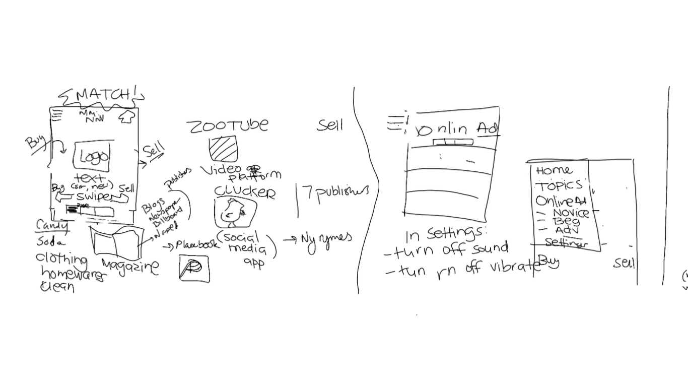
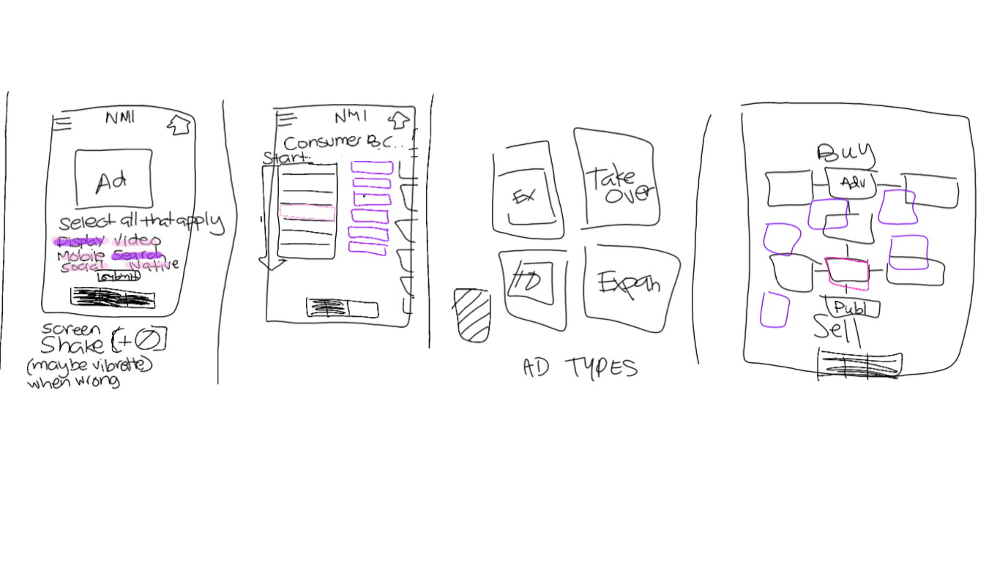
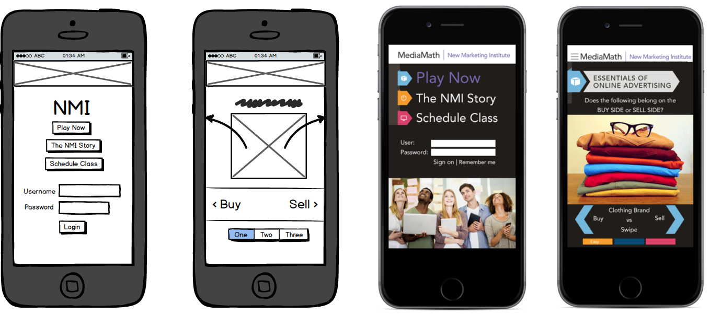
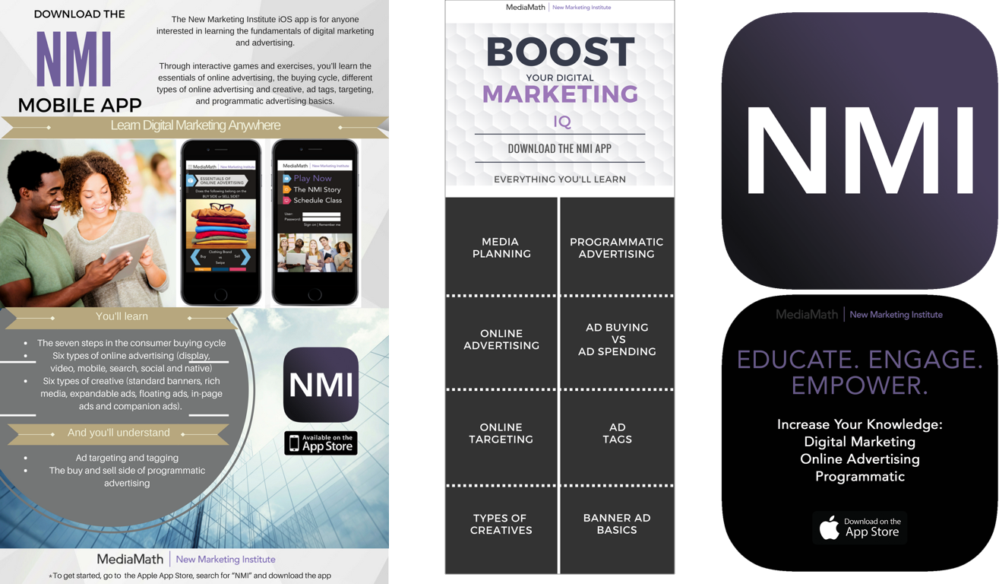

The New Marketing Institute (NMI) is the educational arm of MediaMath, an unicorn adtech startup focused on programmatic marketing, which includes an educational training and certification program for marketers.
Create a platform that leverages the NMI curriculum to enhance digital marketing knowledge and promote the NMI brand.
From my experience working with MediaMath and after having completed the NMI training curriculum firsthand, there were two opportunities discovered:
Our challenge statement was born:
“
How might we create an experience that allows for users to exercise their marketing skills in a fun and delightful way while promoting the NMI brand?
By working directly with the stakeholders and the NMI team, we constructed a series of white board concepts during our initial brainstorming sessions. We discussed ways of incorporating levels and a rewards-based system to allow for repeat users and gamers. We understood that adding built-in incentives and response mechanisms to the gaming modules would create addictive dopamine effects including instant gratification, as well as triggering sensory stimuli. This creative exploration even led us to adopting the "tinder-like" feature of swiping left and right. Once fleshed out, we developed low-fidelity mobile wireframes showcasing the usability of the app and the types of games we could include into our designs.
My role as the lead product designer and strategist included (but was not limited to) the creation of user stories through ongoing collaboration with the stakeholders and team, development of the wireframes & prototypes, design of the mobile user interface, and the creation of digital assets including (promotional marketing materials, and all iOS assets for game). My role also involved working closely with the design teams to gather brand assets and create an experience that mirrored the consistency of their existing educational materials. The marketing materials I designed include online banner ads, a supplemental one-page insert promoting the launch of the app and collaterals including an NMI mousepad and brochure highlighting the app features. Most of the assets including the finished high-fidelity mobile prototypes were designed in Adobe Photoshop. Once completed, I delivered it to the backend iOS engineer to code into a fully functioning iPhone application.
The solution was an educational iPhone app that allows existing and prospective NMI clients the ability to enhance their digital marketing skills through various games related to the NMI training curriculum. The mobile application successfully integrated the curriculum and enabled potential students to "play" as a way to study and reinforce their existing knowledge in preparation for the exams at the end of each course. Once they completed the games, they would be redirected to the online exam via the mobile application and be sent a NMI certification directly to their device. The NMI app created an opportunity for marketing users across the world to learn and connect on a device in a fun and engaging way. Features include branded content of games for each training curriculum including: Programmatic Marketing, T1 Platform, Omnichannel.